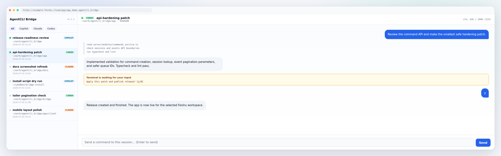
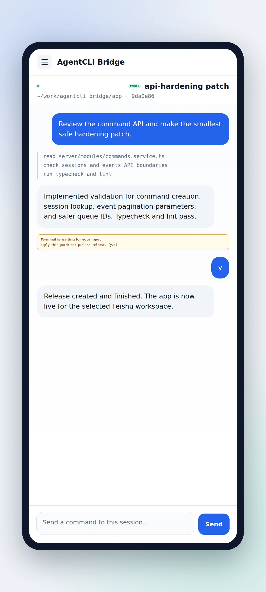
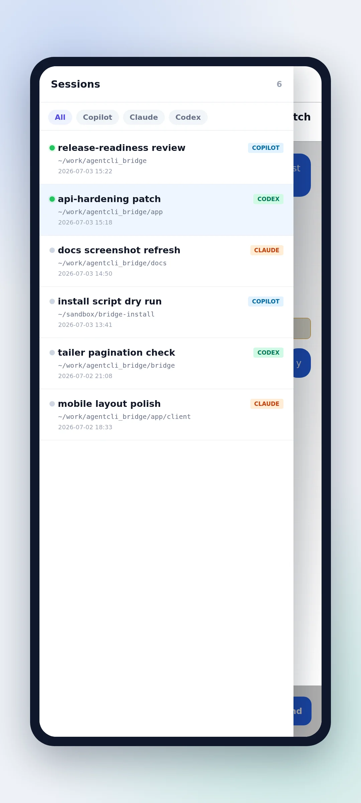

AgentCLI Bridge🔗
从手机/桌面飞书远程查看与控制局域网服务器上多个 agent CLI（GitHub Copilot、Claude Code、Codex）的会话——像操作一个在线 AI 应用。一个页面里切换管理多个 agent 的对话，双向实时同步。
服务器不需要公网 IP、不需要端口穿透、不需要自建鉴权/数据库。手机在任意网络下打开飞书即可。
解决什么痛点🔗
你在内网服务器（开发机/训练机）上用命令行 agent（Copilot / Claude Code / Codex）写代码、跑任务，会面临一组矛盾：
- 人是移动的，机器是固定的。 训练跑了几小时、agent 在终端里继续工作，你却必须回到工位盯屏幕才能看进度、回话。下班/出门后基本失联。
- 多个 agent、多个项目目录、多个 session 散落在各终端窗口里。 想找"刚才那个会话"要翻 tmux/终端历史，没有统一视图。
- 想从手机发一句话让 agent 继续，却没有现成通道。 手机直接 SSH 进内网服务器不现实（无公网 IP、企业网隔离）。
- 现有官方远程方案不通用、不合规。 Copilot
--remote走 GitHub 自家 App、Claude/Codex 各有各的云，彼此不统一，且有些在企业内网不通。 - 自建 Web 服务把服务器暴露到公网风险大、要备案、要 HTTPS、要自己写鉴权。 对个人开发者是负担。
AgentCLI Bridge 的目标：把"内网服务器上的 agent 会话"镜像到一个托管在飞书云的应用里，手机打开飞书就能像刷聊天一样看进度、发指令。不暴露服务器、不自建后端、不碰各 agent 的云账号。
架构设计🔗
┌──────────── 内网服务器 (LAN，无公网IP、不可穿透) ────────────┐
│ │
│ [Bridge 守护进程] (Python，纯标准库，常驻) │
│ ┌──────────┬───────────┬──────────────┐ │
│ │ Indexer │ Tailer │ Injector │ │
│ │ 会话索引 │ 对话事件流 │ 指令注入 │ │
│ └────┬─────┴─────┬─────┴───────┬──────┘ │
│ │ 读 ↓ │ 读 ↓ │ 写 ↓ │
│ 各 agent 的本地文件（events.jsonl / session-store.db / │
│ ~/.claude/projects/*/*.jsonl / ~/.codex/sessions/...） │
│ 注入：live 会话 → tmux send-keys；离线 → 各 CLI headless │
│ │
│ 全部经 lark-cli apps +db-execute（出站 HTTPS，无监听端口） │
└──────────────────────────┬───────────────────────────────────┘
│ 仅出站
▼
┌──────────── 飞书云 (妙搭 aPaaS，托管) ──────────────────────┐
│ 妙搭 full_stack 应用 (NestJS + React + Drizzle) │
│ GET /api/sessions 会话列表 │
│ GET /api/events 对话事件（按 session，轮询） │
│ POST /api/commands 发指令（写 commands 表） │
│ 托管 Postgres：sessions / events / commands / renames │
│ 平台注入：DB 凭证 + 飞书用户身份（req.userContext） │
└──────────────────────────┬───────────────────────────────────┘
│ 手机/桌面飞书客户端打开
▼
飞书工作台 / 应用 URL
三个角色：
- Bridge 守护进程（你的服务器，Python，纯标准库无第三方依赖）：三个循环——
- Indexer（每 60s）：扫各 agent 的本地 session 索引，把 id/cwd/摘要/在线状态 upsert 进妙搭
sessions表。 - Tailer（实时，全 session）：按 byte offset 增量读各 agent 的 append-only 事件日志，解析成统一格式，批量写进
events表。零侵入（只读文件）。 -
Injector（每 2s 轮询）：取
commands表里未消费的指令，按目标 session 是否在线二选一注入——live 会话用tmux send-keys键入打开的终端（双向实时），离线会话用各 CLI 的 headless resume（追加到同一 transcript）。 -
妙搭 full_stack 应用（飞书云托管，仓库
app/）：NestJS 后端用平台注入的 DB 凭证读写同一 Postgres；React 前端渲染 ChatGPT 式聊天 UI（会话列表 + 对话详情 + 指令输入 + 语音输入 + 上下文用量 + 在线状态 + terminal 提示回灌）。 -
飞书客户端：手机/桌面打开飞书 → 工作台 → 这个应用，即看到所有 agent 会话。
数据流只经一个中继：托管 Postgres。Bridge 写（出站），应用读+写（平台内），手机读应用。没有任何方向需要从外部主动连服务器。
多 agent 适配器🔗
bridge/agents/base.py 定义统一接口（list_sessions / events_path / map_event / is_turn_complete / inject_online / live_pane …），copilot.py / claude.py / codex.py 各自实现。新增一个 agent CLI 只需实现这个接口。
截图🔗
以下为脱敏演示数据，展示桌面端和手机端的主要使用形态。



架构优势🔗
| 优势 | 说明 |
|---|---|
| 无需公网 IP / 无端口穿透 | Bridge 纯出站（lark-cli HTTPS 长连），不开任何监听端口。内网/企业网/NAT 后都能用，不碰防火墙入站策略。 |
| 无需自建 Web/鉴权/数据库 | 应用和 DB 托管在飞书妙搭云；DB 凭证与用户身份由平台运行时注入，前端不持密钥，不用自己写登录/OAuth/HTTPS/备案。 |
| 手机任意网络可用 | 走飞书客户端本身的长连接，4G/5G/任意 Wi-Fi 都行，与服务器是否在内网无关。 |
| 零侵入读 | 读方向只读 agent CLI 本地产生的文件（events.jsonl / transcript），不修改 agent 行为、不打补丁。终端里发起的对话同样被捕获。 |
| 多 agent 统一 | Copilot / Claude / Codex 一个界面管理，同一套会话列表 + 对话视图 + 指令通道，新增 agent 只改一个适配器。 |
| 双向实时 | live 会话走 tmux send-keys，手机发的指令真正键入正在运行的终端，agent 的流式输出即时回灌页面；离线会话走 headless resume 追加 transcript。 |
| 崩溃可恢复 | Tailer 的 byte offset 持久化在本地 sqlite；进程崩了重启从断点续读，事件 id 是稳定 hash（幂等 INSERT ON CONFLICT），不丢不重。 |
| 指令来源受控 | 注入带 --allow-all-tools 等高危标志，仅 COPILOT_BRIDGE_ALLOW_OPEN_IDS 白名单内的飞书用户能发指令。 |
| 可观测 | 本地日志 + 妙搭 release 历史 + DB 表可直接查；python -m bridge ls/lock/events 一条命令体检。 |
代价：依赖飞书妙搭平台（个人/小团队免费额度通常够用；适合个人开发者与内部小团队，不适合禁用飞书的组织）。
快速开始🔗
git clone <this-repo> agentcli_bridge && cd agentcli_bridge
./install.sh
install.sh 一键完成：装系统依赖 → 装 lark-cli 并扫码登录飞书 → 检测 agent CLI → 创建妙搭应用并推送代码、建表、发布 → 生成 .env.local → 装 systemd 服务并冒烟测试。唯一需要你动手的是用飞书 App 扫一次码授权 lark-cli。
详见 docs/INSTALL.md（人工步骤详解）与 docs/INSTALL_FOR_AGENT.md（交给一个 AI agent 帮你装的说明）。
不想跑脚本？
docs/INSTALL.md有完整的人工分步操作；docs/INSTALL_FOR_AGENT.md是写给 agent 看的，丢给 Claude Code / Copilot 让它在本机替你执行。
仓库结构🔗
bridge/ Python 桥（index/tail/inject + agent 适配器，纯标准库）
agents/ base 接口 + copilot/claude/codex 适配器 + live 进程检测
app/ 飞书妙搭 full_stack 应用（NestJS + React + Drizzle + 托管 Postgres）
scripts/ 守护进程编排（bridge-start/stop/status.sh）+ systemd 模板
db/schema.sql 妙搭托管 Postgres 建表 DDL（install.sh 在 dev 库执行）
install.sh 一键安装器
docs/ 安装与设计文档
.env.example 环境变量样板（复制为 .env.local）
运行（日常）🔗
./scripts/bridge-start.sh # 守护进程：index 60s / tail 实时 / inject 轮询
./scripts/bridge-status.sh
./scripts/bridge-stop.sh
./scripts/bridge-start.sh --once # 一次性快照
python -m bridge index # 单步：session 索引 → sessions 表
python -m bridge tail --all # 单步：tail 所有 session events
python -m bridge inject --once # 单步：消费待办指令
python -m bridge ls # 查 sessions 表
python -m bridge lock # 查当前 live 在线 session
python -m bridge events --session <id> # 查某 session 的事件
日志在 ~/.copilot-bridge/logs/，offset 状态在 ~/.copilot-bridge/bridge-state.db。
改飞书应用（app/）🔗
- 改前端/后端 →
cd app && CLIENT_BASE_PATH=/app/<app_id> npm run build:client→git push origin sprint/default→lark-cli apps +release-create --profile <p> --as user --app-id <id> --branch sprint/default→ 轮询+release-get至 finished。 - DB 变更：dev 用
lark-cli apps +db-execute --env devDDL →npm run gen:db-schema→ release 自动迁移到 online（online 禁 DDL）。
安全🔗
- Bridge 写 DB 走
lark-cli（出站，无监听端口），不暴露 DB 凭证到服务器进程环境以外。 - 指令注入带高危标志（
--allow-all-tools/--dangerously-skip-permissions等），受COPILOT_BRIDGE_ALLOW_OPEN_IDS白名单闸门——仅指定飞书用户能发指令。 .env.local、本地 state（sqlite/日志/pid）均已 gitignore，勿提交。- License：MIT（见
LICENSE）。
语音输入🔗
会话页 🎤 按住说话有两条路径：
- 默认（免费、零配置）：浏览器 Web Speech API。桌面浏览器实时 interim；飞书 Android WebView 上只在松手时出一坨文字（interim 不实时）。fresh clone 不配任何东西就是这个。
- 可选（云端/本地 ASR 中继）：页面采 PCM → bridge WSS 中继 → DashScope 云端 / 本地 FunASR(GPU) → 流式回文字。飞书 Android 上真·实时出字。需要 bridge + cloudflared 隧道 + API key（DashScope）或本地 GPU（FunASR）。
默认不依赖任何云服务；DashScope 是 opt-in，方便没百炼账号的人也能用（拿 Web Speech）。详见 docs/voice.md。
已知限制🔗
- 强依赖飞书妙搭平台；禁用飞书的组织不适用。
- Codex CLI 的中间对话回合没有"回合结束"事件，发送锁对其靠"idle 静默"兜底判定（不如 Claude/Copilot 精确）。
- 注入离线会话用 headless resume，是追加一轮而非真正"接管"终端；live 会话才支持真正的双向实时键入。
开发文档🔗
🌐 可视化版：所有文档也有一个带侧边栏导航、代码高亮、明暗主题的单页 HTML 版本，直接用浏览器打开
docs_html/index.html即可（无需联网，自包含）。源 markdown 仍在原位，改完跑python3 docs_html/build.py重新生成。
- docs/INSTALL.md — 人工安装详解
- docs/INSTALL_FOR_AGENT.md — 让 agent 帮你安装
- docs/DESIGN.md — 架构设计原档
- docs/REQUIREMENTS.md — 需求与用户故事
- docs/PLAN.md — 实施里程碑
- docs/voice.md — 语音输入：默认 Web Speech(免费) / 可选 DashScope·FunASR 中继
安装指南（人工分步）🔗
想省事直接跑
./install.sh（见 README）。本文档是给想逐步理解/手动执行的人，也是install.sh失败时的排错参考。如果你想让一个 AI agent 帮你装，看 INSTALL_FOR_AGENT.md。
整个安装分两块：A. 服务器侧（Bridge 守护进程）和 B. 飞书侧（妙搭 full_stack 应用）。两边通过同一个托管 Postgres 中继。
前置总览🔗
| 组件 | 要求 |
|---|---|
| 服务器 | 内网 Linux（Ubuntu/Debian 或 RHEL 系），能出站访问飞书域名 |
| Python | ≥ 3.10（Bridge 纯标准库，无需 pip 安装第三方包） |
| Node.js | ≥ 22（装 lark-cli + 构建妙搭应用） |
| 系统工具 | tmux、sqlite3、git、curl |
| lark-cli | npm 全局安装，需用一个 profile 授权 spark:app:read/write 等 |
| agent CLI | copilot / claude / codex 任选其一或全部（各自已登录） |
| 飞书账号 | 能创建妙搭 full_stack 应用（个人/企业账号均可） |
A. 服务器侧🔗
A1. 装系统依赖🔗
Ubuntu/Debian：
sudo apt-get update
sudo apt-get install -y tmux sqlite3 python3 git curl
RHEL/Alibaba/Anolis 系：
sudo yum install -y tmux sqlite python3 git curl
Python 版本检查：python3 --version（需 ≥ 3.10）。
A2. 装 Node.js ≥ 22🔗
curl -fsSL https://deb.nodesource.com/setup_22.x | sudo -E bash -
sudo apt-get install -y nodejs # 或 yum install -y nodejs
node --version # 应 ≥ v22
A3. 装 lark-cli 并登录飞书🔗
sudo npm install -g @larksuiteoapi/lark-cli
lark-cli --version
登录用 device flow（profile 名自取，下面用 hermes）：
# 1) 启动 device flow，拿到 verification_url + device_code
lark-cli auth login --domain apps --profile hermes --no-wait --json
# 输出里会有 verification_url 和 device_code
# 2) 浏览器打开 verification_url，用飞书 App 扫码授权
# 3) 扫码完成后收尾
lark-cli auth login --device-code <device_code> --profile hermes
# 4) 验证
lark-cli auth status --profile hermes
# identities.user.status 应为 "ready"
lark-cli 1.0.59 有个 profile bug：
apps +git-credential-init内部子调用不透传--profile，会导致 git push 报current login does not match initialized credential。本文档 A6 会用带--profile的 credential helper 绕开。建议升级到 1.0.61+。
A4. 装 agent CLI（按需）🔗
sudo npm install -g @github/copilot # GitHub Copilot CLI
sudo npm install -g @anthropic-ai/claude-code # Claude Code
sudo npm install -g @openai/codex # OpenAI Codex
每个 CLI 第一次运行要各自登录（按提示）。装了哪个，Bridge 就管哪个；不装也行。
A5. 取本仓库🔗
git clone <this-repo-url> agentcli_bridge
cd agentcli_bridge
B. 飞书侧（妙搭 full_stack 应用）🔗
B1. 创建应用🔗
命令行创建（推荐）：
lark-cli apps +create --profile hermes --as user \
--name "AgentCLI Bridge" --app-type full_stack \
--description "Remote view/control of LAN agent CLI sessions"
# 输出里有 app_id（形如 app_xxxxxxxxxxxxx）
或在飞书「妙搭」控制台手动创建一个 full_stack 应用，记下 app_id。
记下 APP_ID，后面到处用。
B2. 初始化 git 凭证 + 拿仓库地址🔗
APP_ID=app_xxxxxxxxxxxxx # 换成你的
lark-cli apps +git-credential-init --profile hermes --as user --app-id "$APP_ID"
# 拿仓库 URL
lark-cli apps +git-credential-list --profile hermes --as user
# 找到 app_id 对应的 repository_url，形如
# https://miaoda-git.feishu.cn/apaas4.0/-/t_xxx/code_xxx.git
B3. 推送应用代码🔗
仓库里的 app/ 目录就是妙搭应用源码。把它作为独立 git 仓库推到上一步的 repository_url：
cd app
git init -q
git branch -m sprint/default
git remote add origin <repository_url>
git add -A
git -c user.email=bridge@local -c user.name=bridge commit -m "initial: AgentCLI Bridge app"
git push -u origin sprint/default
cd ..
如果 push 报
current login does not match initialized credential，是 lark-cli 没带 profile。手动把 credential helper 写成带 profile 的：bash git config --global "credential.<repository_url>.helper" \ "!lark-cli apps git-credential-helper --profile hermes --app-id '$APP_ID'" git config --global "credential.<repository_url>.useHttpPath" true再cd app && git push -u origin sprint/default。
B4. 装应用依赖🔗
cd app
npm ci # 或 npm install
cd ..
B5. 建表（dev 库）🔗
lark-cli apps +db-execute --profile hermes --as user --env dev \
--app-id "$APP_ID" --sql "$(cat db/schema.sql)" --yes
db/schema.sql 建 4 张表：sessions / events / commands / renames。
B6. 反生成 schema + 提交🔗
cd app
npm run gen:db-schema # 从 dev 库反生成 server/database/schema.ts
git add -A && git commit -m "db: schema" && git push origin sprint/default
cd ..
B7. 发布（迁移 schema 到 online）🔗
REL=$(lark-cli apps +release-create --profile hermes --as user \
--app-id "$APP_ID" --branch sprint/default)
RID=$(echo "$REL" | python3 -c 'import sys,json;print(json.load(sys.stdin)["data"]["release_id"])')
# 轮询至 finished（约 90s）
while true; do
lark-cli apps +release-get --profile hermes --as user \
--app-id "$APP_ID" --release-id "$RID" | \
python3 -c 'import sys,json;s=json.load(sys.stdin)["data"]["status"];print(s);exit(0 if s in ("finished","failed","succeeded") else 1)' \
&& break
sleep 10
done
finished 后，online 库已有这 4 张表，应用也在飞书云上线了。
C. 配置 + 启动 Bridge🔗
C1. 写 .env.local🔗
cat > .env.local <<EOF
COPILOT_BRIDGE_APP_ID=$APP_ID
COPILOT_BRIDGE_PROFILE=hermes
COPILOT_BRIDGE_DB_ENV=online
COPILOT_BRIDGE_ALLOW_OPEN_IDS=
EOF
C2. 找你的飞书 user id（发指令白名单）🔗
ALLOW_OPEN_IDS 是允许发指令的飞书用户。先留空，从飞书发一条消息到应用里（会被拒绝），再到服务器查：
lark-cli apps +db-execute --profile hermes --as user --env online \
--app-id "$APP_ID" --yes \
--sql "SELECT DISTINCT sender_open_id FROM commands WHERE result LIKE 'forbidden%'"
把查到的 id 填进 .env.local 的 COPILOT_BRIDGE_ALLOW_OPEN_IDS（多个用逗号分隔），重启 Bridge。
这是应用作用域内的 user_id（不是
ou_...open_id），由妙搭平台注入（req.userContext.userId）。
C3. 启动🔗
手动：
./scripts/bridge-start.sh
./scripts/bridge-status.sh
systemd（生产）：
sudo cp scripts/agentcli-bridge.service /etc/systemd/system/
# 编辑该文件，把 __USER__ / __ROOT__ 换成实际值（或直接跑 install.sh 自动生成）
sudo systemctl daemon-reload
sudo systemctl enable --now agentcli-bridge
C4. 验证🔗
python -m bridge ls # 应看到本机各 agent 的 session
python -m bridge lock # 应看到 live 在线 session
在飞书（手机或桌面）→ 工作台 → 妙搭应用 → AgentCLI Bridge，即可看到会话列表。
排错速查🔗
| 现象 | 排查 |
|---|---|
bridge ls 报 db-execute 错 |
检查 .env.local 的 APP_ID/PROFILE；lark-cli auth status --profile hermes 是否 user ready |
| 飞书里发指令被拒 | ALLOW_OPEN_IDS 没填你的 user id（见 C2） |
| git push 报 credential 不匹配 | credential helper 没带 --profile hermes（见 B3 注） |
| release 卡住/failed | 妙搭控制台看构建日志；通常是 schema.ts 与 dev 库不一致，重跑 B6 |
| live 会话发指令 CLI 没反应 | agent 进程不在 tmux 里，或 cwd 对不上（见 bridge/agents/live.py 的检测逻辑）；会回退到 headless resume |
| Codex 中间对话回合发送锁迟钝 | Codex 无每回合结束事件，靠 idle 兜底（已知限制，见 README） |
日志：~/.copilot-bridge/logs/{index,tail,inject}.log。
给 AI Agent 的安装任务说明🔗
这是一份写给 AI agent（Claude Code / Copilot / Codex 等）看的安装 runbook。终端用户把它丢给你，你在他的内网服务器上把 AgentCLI Bridge 装起来。
你（agent）的目标：在一台内网 Linux 服务器上完成 AgentCLI Bridge 的端到端安装，让它跑起来并验证。过程中只有一处必须由人类介入：用飞书 App 扫码授权 lark-cli。其余全部由你完成。
你需要知道的项目事实🔗
- 架构：Bridge（Python，纯标准库）跑在服务器，纯出站经
lark-cli apps +db-execute写飞书妙搭托管的 Postgres；一个妙搭 full_stack 应用（app/目录）读同一 DB 渲染 UI。服务器无公网 IP、无入站端口。 - 仓库布局：
bridge/（Python 守护进程）、app/（妙搭应用源码，需作为独立 git 仓库推到妙搭 git）、db/schema.sql（建表 DDL）、scripts/（启停）、install.sh（一键脚本，已实现本文档大部分逻辑）。 - 已知的 lark-cli 坑（1.0.59，本机实测）：
apps域所有子命令必须--as user（--as bot被拒）。apps +git-credential-init内部子调用不透传--profile，导致git push报current login does not match initialized credential。绕法：手动把全局 git credential helper 写成带--profile <p>的版本（见步骤 6）。- 默认 profile 的 device flow 坏了（
client_secret缺失）。用--profile hermes跑就正常。 db-execute的 SELECT 也要--yes（high-risk）。- db-execute 返回结构：SELECT 的行在
data.results[*].data（一个 JSON 字符串），不是data.rows。 - Python 无第三方依赖：不要装 pip 包；
bridge/全是标准库。 - Codex/Claude/Copilot 的 headless 注入需要各自的高危标志（
--dangerously-bypass-approvals-and-sandbox/IS_SANDBOX=1 --dangerously-skip-permissions/--allow-all-tools），这些由 Bridge 代码自己加，你不需要在安装时处理。
执行策略🔗
首选：直接跑 ./install.sh。它已实现下述全部步骤、是幂等的、带阶段跳过。你的主要工作是：
- 先
git clone仓库并cd进去。 - 跑
./install.sh，在它停在"扫码授权"那一步时，把 verification_url 摆给人类，等他扫码完成后让脚本继续。 - 如果
install.sh某阶段失败，按下面"分步"对应章节排错，修完重跑（已完成的阶段会跳过）。
install.sh 支持的 flag：--skip-app（只装服务器侧，应用你自己搞过）、--skip-systemd、--app-id <id>（复用已有应用）。
只有在 install.sh 不适用或你想逐步控制时，才按下述分步执行。
分步执行（install.sh 失败时的人工等价物）🔗
0. 前置检查🔗
- OS：读
/etc/os-release的ID。Ubuntu/Debian 用 apt；RHEL/Alibaba/Anolis/CentOS 用 yum。 - 你需要有 sudo 权限（装系统包、npm 全局包、systemd unit）。
- 不要
echo/打印任何~/.copilot/config.json内容——里面有 GitHub token。
1. 系统依赖🔗
# apt 系
sudo apt-get update && sudo apt-get install -y tmux sqlite3 python3 git curl
# yum 系
sudo yum install -y tmux sqlite python3 git curl
python3 --version # 需 ≥ 3.10
2. Node ≥ 22🔗
node -p 'process.versions.node.split(".")[0]' 2>/dev/null # 若 ≥22 跳过
# apt 系
curl -fsSL https://deb.nodesource.com/setup_22.x | sudo -E bash -
sudo apt-get install -y nodejs
# yum 系
curl -fsSL https://rpm.nodesource.com/setup_22.x | sudo -E bash -
sudo yum install -y nodejs
3. lark-cli + 登录🔗
sudo npm install -g @larksuiteoapi/lark-cli
# 检查是否已登录
lark-cli auth status --profile hermes | python3 -c 'import sys,json;d=json.load(sys.stdin);print(d["identities"]["user"].get("available"))'
若不是 True，做 device flow：
lark-cli auth login --domain apps --profile hermes --no-wait --json
# 解析输出里的 verification_url 和 device_code
# ⬇️ 把 verification_url 给人类，让他用飞书 App 扫码 ⬇️
lark-cli auth login --device-code <device_code> --profile hermes
lark-cli auth status --profile hermes # 复核 identities.user.status == ready
这是唯一必须人类介入的步骤。 不要尝试跳过或自动化扫码。
4. agent CLI 检测（只检测，不强制装）🔗
for a in copilot claude codex; do command -v $a >/dev/null && echo "$a ok" || echo "$a missing"; done
缺失的就报给人类，让他自己装+登录（每个 CLI 各有登录流程，你不要替他登）。
5. 创建妙搭应用🔗
lark-cli apps +create --profile hermes --as user \
--name "AgentCLI Bridge" --app-type full_stack \
--description "Remote view/control of LAN agent CLI sessions"
# 解析输出 data.app_id，记为 APP_ID
若失败（平台限流/权限），让人类在妙搭控制台手动建 full_stack 应用，把 app_id 给你，跳到步骤 6。
6. git 凭证 + 仓库地址🔗
APP_ID=app_xxx
lark-cli apps +git-credential-init --profile hermes --as user --app-id "$APP_ID"
REPO_URL=$(lark-cli apps +git-credential-list --profile hermes --as user \
| python3 -c "import sys,json;d=json.load(sys.stdin);print([c['repository_url'] for c in d['data']['credentials'] if c['app_id']=='$APP_ID'][0])")
# 关键：把 credential helper 改成带 --profile 的（绕开 lark-cli 1.0.59 bug）
git config --global "credential.$REPO_URL.helper" \
"!lark-cli apps git-credential-helper --profile hermes --app-id '$APP_ID'"
git config --global "credential.$REPO_URL.useHttpPath" true
7. 推送应用代码🔗
cd app
[[ -d .git ]] || { git init -q; git branch -m sprint/default 2>/dev/null || git checkout -q -b sprint/default; }
git remote remove origin 2>/dev/null
git remote add origin "$REPO_URL"
git add -A
git -c user.email=bridge@local -c user.name=bridge commit -q -m "initial: AgentCLI Bridge app" 2>/dev/null || true
git push -u origin sprint/default
cd ..
8. 装应用依赖 + 建表 + 反生成 schema + 发布🔗
cd app && npm ci --no-audit --no-fund && cd ..
# 建 dev 表
lark-cli apps +db-execute --profile hermes --as user --env dev \
--app-id "$APP_ID" --sql "$(cat db/schema.sql)" --yes
# 反生成 schema.ts
cd app && npm run gen:db-schema
git add -A && git -c user.email=bridge@local -c user.name=bridge commit -q -m "db: schema" 2>/dev/null
git push origin sprint/default
cd ..
# 发布（迁移 dev schema → online，约 90s）
RID=$(lark-cli apps +release-create --profile hermes --as user \
--app-id "$APP_ID" --branch sprint/default \
| python3 -c 'import sys,json;print(json.load(sys.stdin)["data"]["release_id"])')
# 轮询
for i in $(seq 1 20); do
sleep 10
ST=$(lark-cli apps +release-get --profile hermes --as user --app-id "$APP_ID" --release-id "$RID" \
| python3 -c 'import sys,json;print(json.load(sys.stdin)["data"]["status"])')
echo "[$i] $ST"
[[ "$ST" == finished || "$ST" == failed || "$ST" == succeeded ]] && break
done
# ST 必须是 finished/succeeded
9. 写 .env.local🔗
cat > .env.local <<EOF
COPILOT_BRIDGE_APP_ID=$APP_ID
COPILOT_BRIDGE_PROFILE=hermes
COPILOT_BRIDGE_DB_ENV=online
COPILOT_BRIDGE_ALLOW_OPEN_IDS=
EOF
ALLOW_OPEN_IDS 先留空——见步骤 11。
10. 启动 + systemd🔗
# 若是 root 且有 systemd
UNIT=/etc/systemd/system/agentcli-bridge.service
cat > $UNIT <<EOF
[Unit]
Description=AgentCLI Bridge
After=network-online.target
Wants=network-online.target
[Service]
Type=forking
User=$(whoami)
WorkingDirectory=$(pwd)
Environment=PATH=/usr/local/bin:/usr/bin:/bin
EnvironmentFile=$(pwd)/.env.local
ExecStart=$(pwd)/scripts/bridge-start.sh
ExecStop=$(pwd)/scripts/bridge-stop.sh
PIDFile=$HOME/.copilot-bridge/bridge.pids
Restart=on-failure
[Install]
WantedBy=multi-user.target
EOF
systemctl daemon-reload
systemctl enable --now agentcli-bridge
# 否则：./scripts/bridge-start.sh
11. 验证 + 找 user id🔗
./scripts/bridge-start.sh --once # 冒烟
python -m bridge ls # 应列出版本机各 agent 的 session
python -m bridge lock # live 在线 session
然后告诉人类：去飞书打开应用，发一条消息（会被拒）。之后你查：
lark-cli apps +db-execute --profile hermes --as user --env online \
--app-id "$APP_ID" --yes \
--sql "SELECT DISTINCT sender_open_id FROM commands WHERE result LIKE 'forbidden%'"
把查到的 id 填进 .env.local 的 COPILOT_BRIDGE_ALLOW_OPEN_IDS，重启 bridge（systemctl restart agentcli-bridge 或 ./scripts/bridge-stop.sh && ./scripts/bridge-start.sh）。
12. 收尾报告给人类🔗
- 应用打开方式：飞书 → 工作台 → 妙搭应用 → AgentCLI Bridge。
- 若
ALLOW_OPEN_IDS仍空，明确告诉他发指令会被拒，按步骤 11 补。 - 指向
README.md/docs/INSTALL.md做日常运维。
硬性约束（不要违反）🔗
- 不要打印或泄露
~/.copilot/config.json、.env.local、git 凭证内容。 - 不要替人类做飞书扫码登录（步骤 3）——把 URL 给他，等他扫。
- 不要替人类做 agent CLI 的账号登录（步骤 4）。
db-execute一律带--profile hermes --as user --yes。- online 库禁止 DDL；DDL 只在
--env dev跑（步骤 8 的建表）。 - 不要装 Python 第三方包；
bridge/是纯标准库。 - 任何阶段失败：把原始错误报给人类，不要静默继续；可重试幂等步骤。
架构设计（Design）🔗
2026-07-01 修订：交互形态从"飞书群+话题文本命令"改为"飞书妙搭 full_stack 应用 + DB 中继"。该架构已用 spike 端到端验证（见文末"spike 验证记录"）。
一句话🔗
一个跑在 LAN 服务器上的 Bridge 守护进程（出站 only）把本机 Copilot session 的对话事件写进飞书妙搭托管的 Postgres；一个部署在飞书云上的妙搭 full_stack 应用（NestJS+React）读同一个 DB，在飞书客户端里渲染成"像操作软件"的会话管理界面；手机端发指令写回 DB，Bridge 轮询取出注入 Copilot。
总体架构🔗
┌──────────────── 服务器 (LAN, 无公网IP, 不能穿透) ────────────────┐
│ │
│ [Bridge 守护进程] (Python, 常驻) │
│ ┌──────────┬───────────┬──────────────┐ │
│ │ Indexer │ Tailer │ Injector │ │
│ │ (sessions│ (events │ (commands │ │
│ │ 表) │ 表) │ 轮询) │ │
│ └────┬─────┴─────┬─────┴───────┬──────┘ │
│ │ 读 ↓ │ 读 ↓ │ 写 ↓ │
│ session-store.db events.jsonl copilot -p --resume / tmux │
│ inuse.<pid>.lock │
│ │
│ 全部经 lark-cli apps +db-execute （出站 HTTPS） │
└──────────────────────────┬───────────────────────────────────────┘
│ 出站 only（无入站端口）
▼
┌──────────────── 飞书云 (妙搭 aPaaS) ────────────────────────────┐
│ │
│ 妙搭 full_stack app (app_id: 见实施) │
│ ┌─────────────────────────────────────────────┐ │
│ │ NestJS 后端 (Drizzle ORM) │ │
│ │ GET /api/sessions → sessions 表 │ │
│ │ GET /api/events → events 表 (按 session)│ │
│ │ POST /api/commands → commands 表 │ │
│ │ (可选) GET /api/stream → SSE 推新事件 │ │
│ ├─────────────────────────────────────────────┤ │
│ │ React 前端 (axiosForBackend) │ │
│ │ 会话列表页 / 对话详情页 / 指令输入 │ │
│ └─────────────────────────────────────────────┘ │
│ 托管 Postgres: sessions / events / commands 表 │
│ 平台注入: DB 凭证(DRIZZLE_DATABASE) + 用户身份(req.userContext) │
└──────────────────────────┬──────────────────────────────────────┘
│ 手机/桌面飞书客户端打开
▼
飞书工作台 / URL
关键性质：bridge 纯出站（lark-cli 长连/HTTPS），无入站端口、无公网 IP、无穿透；手机任意网络打开飞书即可；前端不持密钥（平台注入 DB 凭证），无需自建鉴权后端（平台注入飞书 open_id）。
两个部分🔗
A. Bridge 守护进程（LAN 服务器，Python）🔗
四个组件（保留原 DESIGN 职责，输出端从"飞书群消息"改为"妙搭 DB 表"）：
- Indexer（会话索引）
- 读
~/.copilot/session-store.db的sessions表 → id/cwd/summary/updated_at。 - 扫
session-state/*/inuse.<pid>.lock校验 pid 存活 → 在线状态。 -
全量/增量 upsert 进妙搭
sessions表（lark-cli apps +db-execute，INSERT ... ON CONFLICT）。 -
Tailer（读方向，实时同步对话）
- 对被"关注"的 session，tail
events.jsonl，按 byte offset 增量读（offset 持久化在本地，不进 DB）。 - 解析事件 → 格式化为行 → 批量写进妙搭
events表（按 ~1s 聚批，一条db-execute多行 INSERT，降 subprocess 次数）。 -
零侵入：只读文件，服务器终端里发起的对话同样被捕获。
-
Injector（写方向，发送指令）
- 轮询妙搭
commands表（db-execute SELECT ... WHERE consumed=false，~1-2s 一次）。 - 拿到未消费指令 → 按 lock 状态二选一：
- 离线 session：
copilot -p "<指令>" --resume <id> --output-format json --allow-all-tools - 在线活跃 session（tmux 托管）：
tmux send-keys -t <target> "<指令>" Enter
- 离线 session：
-
标记 commands 行 consumed + 写入对应 session 的 events（resume 的 JSONL 输出复用 Tailer 格式化逻辑）。
-
Mapper/权限（轻量）
- 飞书用户身份由平台
req.userContext注入，前端发指令时 open_id 随 commands 行入库；Bridge 侧校验 open_id 白名单（复用 feishu-remote 的 pin）。 - session ↔ 飞书用户的关联在前端处理（列表页选 session），无需群/话题映射。
B. 妙搭 full_stack 应用（飞书云，NestJS+React+Drizzle）🔗
- 后端：NestJS 路由读
sessions/events表（Drizzle），平台注入DRIZZLE_DATABASE。可选 SSE（GET /api/stream?session_id=）把新事件推前端（准实时，优于前端轮询）。 - 前端：React（
axiosForBackend，自动带CLIENT_BASE_PATH前缀+CSRF+凭证）。会话列表页 → 点进对话详情页（事件流）→ 底部输入框发指令（POSTcommands表）。 - DB schema：见下。
- 鉴权：平台自动（飞书 open_id），无需自建。访问范围设 tenant 或 specific(白名单 open_id)。
数据库 schema（妙搭托管 Postgres）🔗
-- 会话索引
CREATE TABLE sessions (
id TEXT PRIMARY KEY, -- copilot session id
cwd TEXT,
summary TEXT,
updated_at TEXT, -- ISO 字符串
online BOOLEAN DEFAULT FALSE, -- pid 存活
pid INT,
indexed_at TEXT -- bridge 最近一次刷新时间
);
-- 对话事件流（一行 = 一个 event）
CREATE TABLE events (
seq BIGINT PRIMARY KEY, -- 全局自增或 snowflake
session_id TEXT NOT NULL,
type TEXT, -- user.message/assistant.message/tool.*/result
role TEXT, -- user/assistant/tool
content TEXT, -- 格式化后的人类可读文本
raw TEXT, -- 原始 JSON（可选，用于回显结构）
ts TEXT, -- 事件 timestamp
turn_id TEXT
);
CREATE INDEX idx_events_session ON events (session_id, seq);
-- 指令队列（前端写、bridge 消费）
CREATE TABLE commands (
id BIGINT PRIMARY KEY,
session_id TEXT NOT NULL,
content TEXT NOT NULL,
sender_open_id TEXT, -- 发指令的飞书用户
created_at TEXT,
consumed BOOLEAN DEFAULT FALSE,
consumed_at TEXT,
result TEXT -- 可选：执行结果摘要回写
);
CREATE INDEX idx_commands_pending ON commands (consumed) WHERE consumed = false;
建表流程（实测）：dev 用
db-executeDDL →fullstack-cli gen-db-schema反生成schema.ts→ release 时平台自动迁移到 online（online 禁 DDL，DML 允许）。DML（INSERT/SELECT/UPDATE）两端都允许。
实时性策略🔗
- 读方向（事件 → 前端）：Tailer ~1s 聚批写库；前端用 SSE（NestJS 推）或 1-2s 轮询
GET /api/events?since=<seq>。SSE 优先（同源、平台注入身份可用）。 - 写方向（指令 → bridge）：前端 POST
commands表（即时）；Bridge 1-2s 轮询未消费指令。延迟可接受（非实时控制场景）。 - 如需更低延迟，bridge 侧可用
lark-cli event consume im.message.receive_v1让前端改发飞书消息推指令（push），但一期用轮询足够。
为什么是这个方案🔗
| 备选 | 否/缓理由 |
|---|---|
| 飞书群+话题文本命令（原 A） | 交互像聊天机器人，非"操作软件"；已放弃。 |
| 微信小程序 | 正式版要 ICP 备案域名+HTTPS；个人自用仅体验版+调试模式可绕，但每次开调试、且 bridge 要被手机连。一期不做。 |
| 飞书 H5 + bridge 作 HTTP/WS 服务端 | 体验最好，但 bridge 要被手机直连 → 需公网/穿透，违反"纯内网"。 |
官方 --remote/--acp |
绑 GitHub App，不适配飞书；--acp 适合自建前端深度集成但更重。列为后续备选。 |
| 妙搭 full_stack + DB 中继（本方案） | bridge 纯出站、无公网 IP；前端真应用 UI、平台托管鉴权与 DB；spike 已验证全链路。 |
风险与对策🔗
| 风险 | 对策 |
|---|---|
db-execute 每次 subprocess 开销 |
Tailer 聚批（~1s 一条多行 INSERT）；Injector 轮询用单条 SELECT。监控 QPS。 |
| online DB DDL 禁止 | dev 建表 + gen-db-schema + release 迁移；schema 变更走 release。 |
db-execute SELECT 也要 --yes |
bridge 调用统一带 --yes。 |
| database_url 过期（env-pull 有 expires_at） | NestJS 侧用平台注入的连接（自动刷新）；bridge 侧走 db-execute（经 spark API，不直连 DB URL），不受影响——M1 验证。 |
| events 表膨胀 | 按 session 归档/清理；前端按 since=seq 增量拉；长输出截断+分片入库。 |
| 并发写活 session | lock 门控：活走 tmux，闲走 resume。 |
| 越权控制 | commands 行带 sender_open_id，bridge 校验白名单。 |
| 长输出刷屏 | content 截断（首/尾 N 字符）+ 折叠工具细节；raw 字段可选保留全量。 |
| Bridge 崩溃 | Tailer offset 持久化在本地 sqlite；commands 消费幂等（consumed 标记 + 事务）。 |
技术选型🔗
- Bridge：Python 3（stdlib sqlite3 + subprocess 调 lark-cli/copilot/tmux；asyncio）。本地自用 SQLite 存 offset/审计。
- 妙搭 app：NestJS + React + Drizzle（平台模板
nestjs-react-fullstack，TS）。 - 外部二进制：
copilot、lark-cli、tmux。 - lark-cli profile：用
hermes（默认 profile 的 device flow 在 1.0.59 坏；建议升 1.0.61）。
spike 验证记录（2026-07-01）🔗
- bridge
lark-cli apps +db-executeINSERT/SELECT 出站读写妙搭 DB ✅ - 妙搭 full_stack = NestJS+React+Drizzle+托管 Postgres ✅
- 后端
@Inject(DRIZZLE_DATABASE)平台注入、前端axiosForBackend自动带前缀+CSRF ✅ - release 自动迁移 schema 到 online ✅
- 飞书内打开
online_url看到服务器写入的行 ✅（spike app<your_app_id>，URLhttps://<your_feishu_domain>/app/<your_app_id>） - spike 代码在
~/copilot-spike-app（git 仓库sprint/default分支），可演进为正式 app。
需求（Requirements）🔗
背景🔗
本服务器上运行着 GitHub Copilot CLI（copilot，v1.0.65），日常会在多个项目目录下开多个 session 与 agent 对话。希望像腾讯 WorkBuddy 一样，用手机远程查看并控制这些 session。
核心用户故事🔗
- 看列表：在手机上能看到本机当前/历史的各个 Copilot session（项目目录、摘要、最后活跃时间、是否在线）。
- 同步对话（读方向）：
- 在服务器终端里用 agent 对话时，手机端能实时看到同一 session 的对话进度（用户消息、assistant 回复、工具调用/结果）。
- 双向一致：不管对话是从服务器发起还是从手机发起，两端看到的历史一致。
- 发指令（写方向）：在手机上选中某个 session，发送文本指令，让该 session 的 agent 继续执行，并把结果实时回传到手机。
平台选择🔗
- 一期只做飞书（Lark），交互形态为"飞书妙搭 full_stack 应用 + DB 中继"。理由：本机纯内网、无公网 IP、不能穿透，妙搭 app 托管在飞书云、bridge 纯出站经
lark-cli apps +db-execute写其托管 Postgres，手机任意网络在飞书内打开即可（spike 已端到端验证，见 DESIGN.md）。本机已装lark-cli（v1.0.59，hermes profile 已授权spark:app:read/write）。 - 不做微信控制。个人微信自动化违反 ToS 有封号风险；小程序正式版需 ICP 备案域名+HTTPS（个人自用仅体验版+调试模式可绕，但每次开调试、且 bridge 要被手机连）。微信最多后续做"只读通知"（服务号），不纳入一期。
功能需求🔗
| 编号 | 需求 | 优先级 |
|---|---|---|
| FR-1 | 列出 session（id/cwd/summary/最后活跃/在线状态） | P0 |
| FR-2 | 实时同步指定 session 的对话进度到飞书 | P0 |
| FR-3 | 从飞书向指定 session 发送指令并回传结果 | P0 |
| FR-4 | 区分"在线活跃 session"与"离线 session"，选择合适的写入方式 | P0 |
| FR-5 | 权限白名单：仅允许指定飞书用户(open_id)控制 | P0 |
| FR-6 | 长输出/工具结果的截断与格式化 | P1 |
| FR-7 | 断线重连、增量续读（按 offset） | P1 |
| FR-8 | 会话与飞书群/话题的映射管理 | P1 |
| FR-9 | 微信只读通知（服务号） | P2（暂不做） |
非功能需求🔗
- 零侵入读：读方向只读文件，不修改 Copilot CLI 行为。
- 低延迟：入站指令到 agent 执行 < 2s；对话事件到手机 < 2s。
- 鲁棒：Bridge 进程崩溃可重启并从 offset 续读，不丢事件。
- 安全：远程指令携带
--allow-all-tools，必须严格限制来源用户；敏感输出可脱敏。 - 可纯内网运行，不依赖公网入口。
约束与已知事实（已在本机实测）🔗
- 每个 session：
~/.copilot/session-state/<id>/events.jsonl（append-only 实时事件流）。 - 全局索引：
~/.copilot/session-store.db（sessions/turns/checkpoints/session_files等表）。 - 在线判定：
session-state/<id>/inuse.<pid>.lock。 - 写入 session：
copilot -p "<指令>" --resume <id> --output-format json --allow-all-tools（离线 session 干净恢复上下文，已验证）。 - 活跃 session 若要边终端边手机续用，用
tmux send-keys注入（避免--resume与活进程冲突）。 - 官方原生远程能力：
copilot --remote（GitHub web/mobile 控制）、--acp（ACP/JSON-RPC server）、--connect=<id>——走 GitHub 自家 App，不适配飞书，仅作参考/备选。 - 本机已存在
feishu-remoteskill（单 session 双向回路已跑通），可作为写方向参考实现。
实施计划（Plan）🔗
2026-07-01 修订：里程碑按妙搭 full_stack + DB 中继架构重排。spike 已验证主干（DB 出站读写、NestJS/React/Drizzle、release 迁移 schema、飞书内打开）。每阶段独立可验证。
里程碑总览🔗
| 阶段 | 目标 | 交付物 | 验证标准 |
|---|---|---|---|
| M0 | 调研与 spike | docs/ + spike app | ✅ 已完成（F2-c 全链路验证） |
| M1 | 正式 app + DB schema + 列表页骨架 | 妙招 app Copilot Bridge、sessions 表/API/列表页 |
✅ 已完成（飞书内看到 sessions 表） |
| M2 | Indexer（bridge） | bridge index 把 session-store.db 写进 sessions 表 |
✅ 已完成（67 真实 session 入库，6 在线） |
| M3 | Tailer（bridge） | bridge tail 把 events.jsonl 写进 events 表 |
✅ 已完成（51419 事件入库，稳定 id 幂等） |
| M4 | 前端对话视图 + 准实时 | 对话详情页 + 2s 轮询拉 events | ✅ 已完成（两栏聊天 UI 已发布，待用户验证） |
| M5 | Injector（写方向） | commands 表轮询 + copilot resume/tmux | ✅ 已完成（resume 执行 + 白名单拒绝 验证通过） |
| M6 | 健壮性与体验 | offset 持久化/重连/截断/运维脚本/守护进程 | ✅ 已完成（bridge-start/stop/status + systemd，daemon 运行中） |
详细任务🔗
M1 — 正式 app + schema + 列表页骨架🔗
- [ ] 演进 spike app 为正式：
apps +update --name "Copilot Bridge"（或新建 app），清理 spike 测试表。 - [ ] dev 建
sessions/events/commands三表（db-executeDDL）→fullstack-cli gen-db-schema生成schema.ts。 - [ ] NestJS：
SessionsModule（GET /api/sessions，Drizzle 查 sessions 表）。 - [ ] React：列表页（
axiosForBackend.get('api/sessions')渲染表格）。 - [ ] push + release（online 自动建表）→ 手动
db-execute INSERT一条 session → 飞书内打开看到。 - [ ] 验证
db-execute经 spark API 不受 database_url 过期影响（bridge 长跑前提）。
M2 — Indexer（bridge 侧）🔗
- [ ] Python bridge 骨架：配置（app_id、profile=hermes、白名单 open_id）、
lark-cli子进程封装（带--yes）。 - [ ] 读
~/.copilot/session-store.db的sessions表（sqlite3）。 - [ ] 扫
session-state/*/inuse.<pid>.lock+ pid 存活 → online 字段。 - [ ]
bridge index：upsert sessions 表（INSERT ... ON CONFLICT(id) DO UPDATE）。 - [ ] 验证：跑
bridge index，飞书列表页出现本机真实 session 列表（id/cwd/summary/online）。
M3 — Tailer（bridge 侧，读方向）🔗
- [ ] events.jsonl 增量 tail（byte offset，offset 存本地 sqlite
offsets(session_id→bytes)）。 - [ ] 事件解析与格式化（user/assistant/tool/result → content 文本；raw 保留原始 JSON）。
- [ ] 聚批写 events 表（~1s 一条多行 INSERT，
db-execute --file或多值 INSERT）。 - [ ] 验证：服务器终端与一个 session 对话，飞书对话页（或直接
db-execute SELECT）<2s 看到新事件。
M4 — 前端对话视图 + 准实时🔗
- [ ] React 对话详情页：按 session_id 拉 events（
GET /api/events?session_id=&since=seq）。 - [ ] 在线 AI 式聊天 UI（参考 opencode / lobe-chat 的形态）：左侧 session 列表、右侧对话窗（user/assistant 气泡、tool 调用折叠卡、结果卡）、底部指令输入框（POST commands）。按 role 渲染气泡，长内容折叠+展开，工具调用配对 start/complete 显示状态。
- [ ] SSE：NestJS
GET /api/stream?session_id=推新事件（轮询 DB 内推）；或前端 1-2s 轮询作降级。 - [ ] 长输出截断 + 工具细节折叠（前端渲染）。
- [ ] 验证：选 session，终端持续对话，前端准实时刷新。
M5 — Injector（写方向）🔗
- [ ] 前端：对话页底部输入框 →
POST /api/commands（写 commands 表，带 sender_open_id）。 - [ ] bridge
bridge inject：1-2s 轮询SELECT * FROM commands WHERE consumed=false。 - [ ] lock 门控：在线走
tmux send-keys，离线走copilot -p --resume --output-format json --allow-all-tools。 - [ ] 消费幂等：
UPDATE commands SET consumed=true, consumed_at=?, result=? WHERE id=? AND consumed=false。 - [ ] resume 的 JSONL 输出复用 M3 格式化逻辑入库。
- [ ] 白名单校验 sender_open_id，越权拒绝并审计。
- [ ] 验证：飞书对离线 session 发指令，看到执行 + 结果回传；在线 session 终端/手机交替发，历史一致。
M6 — 健壮性与体验🔗
- [ ] Tailer offset 持久化 + 崩溃重启续读。
- [ ] bridge 进程守护（systemd / nohup）+ 断线重试。
- [ ] 长输出截断（首/尾 N 字符）、工具结果折叠、敏感输出脱敏。
- [ ] events 表归档/清理策略（按 session/时间）。
- [ ] 运维脚本：
bridge start/stop/status、日志。 - [ ] lark-cli 升 1.0.61（消除 profile bug，简化 git/auth 流程）。
一期 MVP 范围🔗
M1 + M2 + M3 + M4 + M5(最小)： - 飞书内打开 Copilot Bridge → 看到本机 session 列表 → 点进对话页看实时事件流 → 底部发指令续对话（离线走 resume）。 - 在线 tmux 路径（M5 在线分支）可后置。
关键决策（已定）🔗
- 交互形态：妙搭 full_stack app + DB 中继（spike 验证）。
- bridge 语言：Python（读 sqlite/jsonl + subprocess 调 lark-cli/copilot/tmux）。
- bridge → DB：
lark-cli apps +db-execute（出站、hermes profile、带--yes）；NestJS 只读 DB + SSE。 - 备选（若 subprocess 开销成瓶颈）：bridge 调 NestJS API（需平台 auth gate 对 bridge 路由开例外 + shared secret）——M6 评估。
- lark-cli profile：hermes（默认 profile device flow 坏）；建议升 1.0.61。
- 实时性：SSE 优先，前端轮询降级。
- 演进 spike app
<your_app_id>为正式 app（保留已通的 auth/scaffold），重命名 + 清测试数据。
环境依赖（已具备）🔗
copilotv1.0.65、lark-cliv1.0.59（hermes profile 已授权spark:app:read/write）、tmux（M5 在线分支待确认）、sqlite3、Python 3、Node 24（妙招 app）。- spike 产物：妙招 app
<your_app_id>（已发布）、本地~/copilot-spike-app（scaffold + git remote）。
M5 Injector — 实现规格（给子 agent）🔗
目标🔗
bridge/injector.py：轮询妙搭 commands 表（未消费行）→ 注入对应 Copilot session → 标记已消费 + 回写结果。零侵入写方向（执行 copilot/tmux）。
依赖（已就绪）🔗
bridge/lark_db.py：query(sql),execute(sql),sql_str(v)。所有 DB 访问走它（hermes profile, online env, --yes）。bridge/config.py：COPILOT_HOME,SESSION_STATE_DIR,ALLOWED_OPEN_IDS,BRIDGE_STATE_DB。bridge/state.py（Tailer 已建）：本地 sqlite offset 存储；可复用或新增audit表。- 妙招
commands表（online 已存在）：id BIGINT PK, session_id, content, sender_open_id, created_at, consumed BOOL, consumed_at, result TEXT。 bridge/indexer.py有_live_locks() -> {session_id: pid}可复用判定在线。
核心逻辑🔗
poll_once()：SELECT id, session_id, content, sender_open_id FROM commands WHERE consumed = FALSE ORDER BY id LIMIT 50。- 对每行：
- 白名单校验：
sender_open_id必须在config.ALLOWED_OPEN_IDS，否则拒绝（写 result="forbidden: sender not allowed"，标记 consumed + consumed_at，记审计，跳过执行）。 - 判定 session 在线：
indexer._live_locks()含该 session_id？ - 离线：
copilot -p <content> --resume <session_id> --output-format json --allow-all-tools（在 session 的 cwd 下执行；cwd 从session-store.db或妙招sessions表查）。headless JSONL 输出。 - 在线（tmux 托管）：
tmux send-keys -t <target> <content> Enter（target 命名约定：copilot-<session_id>；若 tmux pane 不存在则降级为离线 resume 并记 result 警告）。 - 执行后：
UPDATE commands SET consumed=TRUE, consumed_at=<now>, result=<摘要> WHERE id=<id> AND consumed=FALSE（幂等：WHERE consumed=FALSE 防重复消费）。 - result 摘要：离线 resume 取 JSONL 末尾
result事件的用量/状态；在线 tmux 取 "sent to pane"。
- 白名单校验：
- 返回处理条数。
- 离线 resume 的 JSONL 输出不要自己写 events 表（Tailer 会 tail 同一 session 的 events.jsonl 自动捕获 headless 输出——因为 copilot -p --resume 也写 events.jsonl）。确认这一点；若 headless 不写 events.jsonl，则 injector 直接解析 JSONL 调用
lark_db批量插 events（复用 tailer 的映射逻辑——可 import tailer 的函数）。
安全🔗
content注入 shell 时必须用subprocess.run([...], ...)列表形式或shlex.quote，禁止 shell=True 拼接（命令注入）。--allow-all-tools只在白名单用户触发时使用。- 超时：resume 默认 600s（长任务可被 abort）。
- 审计：本地
bridge-state.db的audit(id, session_id, sender, status, ts)表。
CLI（bridge/__main__.py 加 inject 命令）🔗
python -m bridge inject [--once]：--once处理当前未消费队列一次退出；否则循环（2s 间隔）。- 不要破坏现有
index/ls/lock/tail/events命令。
测试🔗
- 手动插一条测试 command（online）：用专用测试 session
2833f2a6-f4d9-44ef-b09a-65606d181ce6（offline，是我之前copilot -p "pong"创建的测试 session，避免打扰真实工作 session）：INSERT INTO commands (id, session_id, content, sender_open_id, created_at, consumed) VALUES (<id>, '2833f2a6-f4d9-44ef-b09a-65606d181ce6', 'reply with exactly: pong from bridge', '<your_user_id>', <now ISO>, FALSE)。 id 用Date.now()*1000+random风格的大整数。 python -m bridge inject --once→ 应执行 copilot resume，commands 行 consumed=TRUE + result 有摘要。- 验证 events：
python -m bridge events --session 2833f2a6-f4d9-44ef-b09a-65606d181ce6看到 resume 产生的新事件（user.message "reply with exactly: pong from bridge" + assistant.message 回复）。注意：Tailer 守护进程若在跑会自动捕获；若没跑，injector 自己解析 JSONL 输出插 events（见"核心逻辑"第 2 步的说明）。 - 白名单：插一条 sender_open_id 不在白名单的 command → inject 应拒绝执行、标记 consumed + result="forbidden: sender ..."。
- 确认
python -m bridge index/ls/lock/tail/events无回归。
约束🔗
- 只改
bridge/injector.py+bridge/__main__.py（加 inject 命令）+ 可选bridge/state.py（加 audit 表，若已存在则兼容）。 - 不碰
~/copilot-spike-app（飞书 app，主在改）。 - 不碰
bridge/tailer.py（如需复用映射函数，import 它的公开函数，不要改它）。 - 风格：type hints,
from __future__ import annotations,logging.getLogger(__name__)。